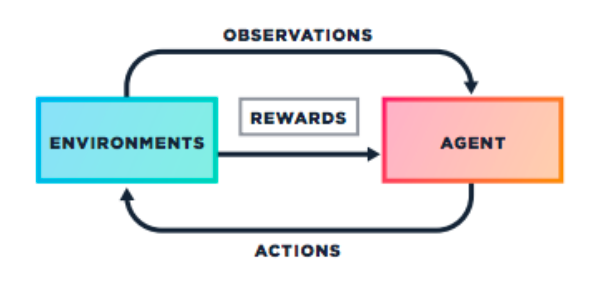

this algorithm, too was introduced to me by andrej karpathy, where in 90 lines he trained an agent which was able to play pong and even win against the atari game ai after sufficient training. The link to the post can be found here. While researching for this algorithm, i came to a stop because i could understand the rationale behind it and why it worked but failed to find an implementation which worked on something other than pong, just a recreation of the original post. So, i decided to train an agent to play space invaders using policy gradients algorithm in tensorflow, and generalised it so that it could be used out of the box without much changes.
Introduction to RL
Reinforcement Learning in the broadest sense refers to the learning problem where the aim is to maximize a long-term objective. The system description consists of an agent which interacts with the environment via its actions at discrete time steps and receives a reward. This transitions the agent into a new state.

There are mainly 2 fundamental methods to solve reinforcement learning settings - value based functions and policy based functions.
Value function approaches attempt to find a policy that maximizes the return by maintaining a set of estimates of expected returns for some policy. These methods rely on the theory of MDPs, where optimality is defined in a sense that: A policy is called optimal if it achieves the best expected return from any initial state.
In policy-based methods, instead of learning a value function that tells us what is the expected sum of rewards given a state and an action, we learn directly the policy function that maps state to action (select actions without using a value function).
Why Policy based functions?